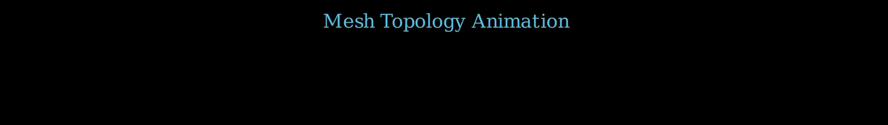
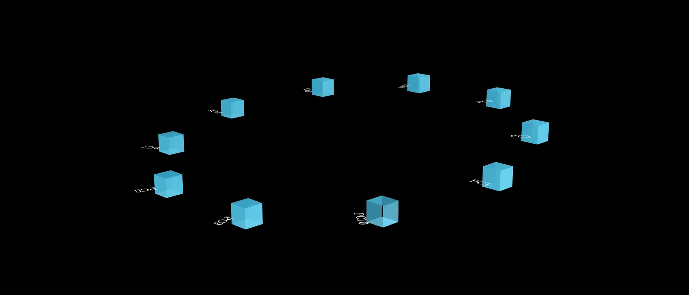
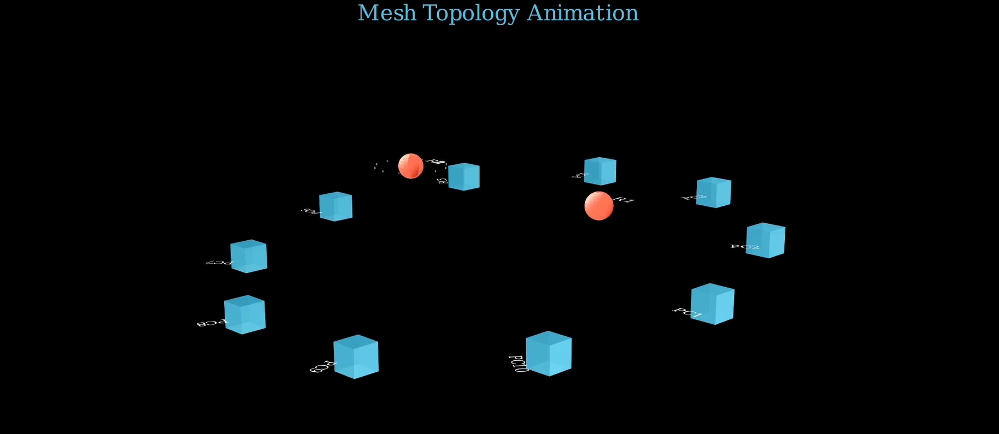
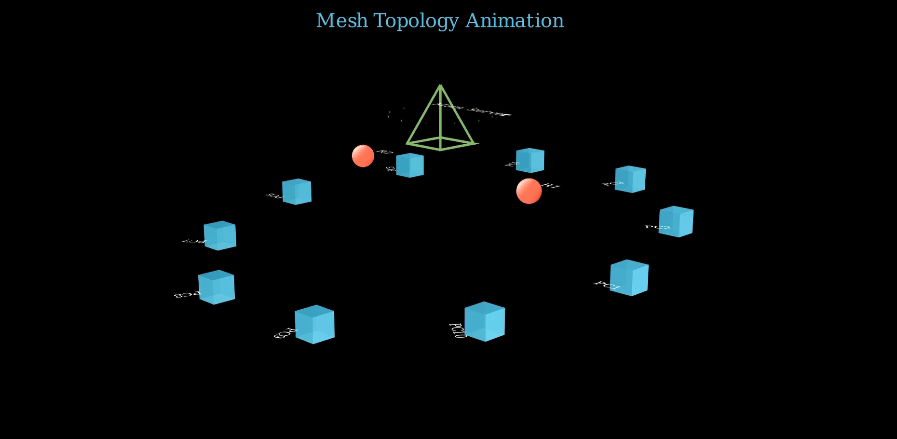
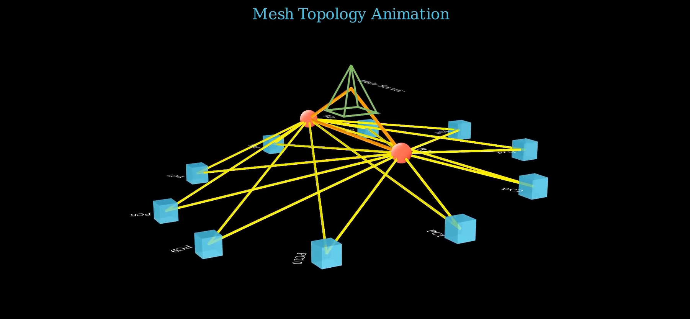
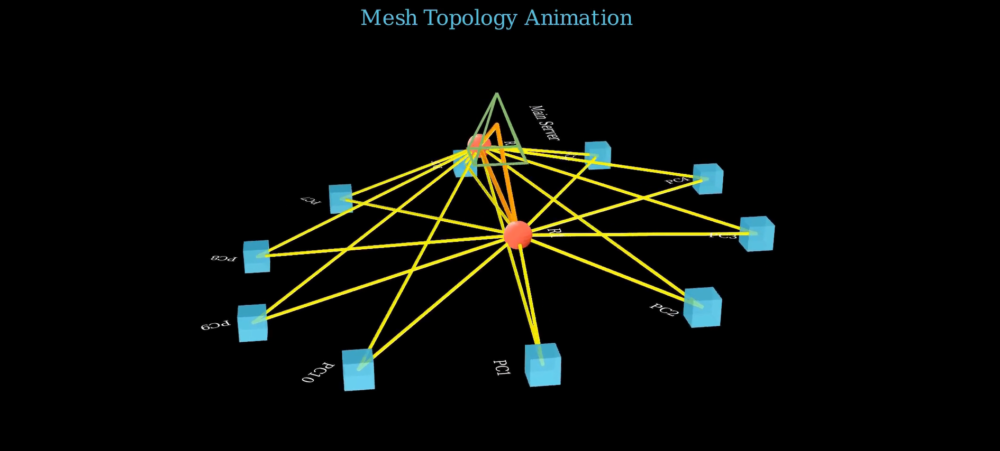
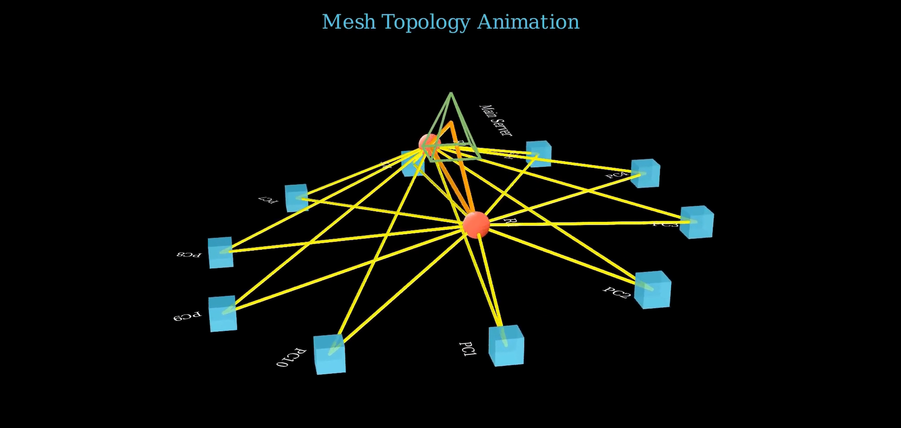
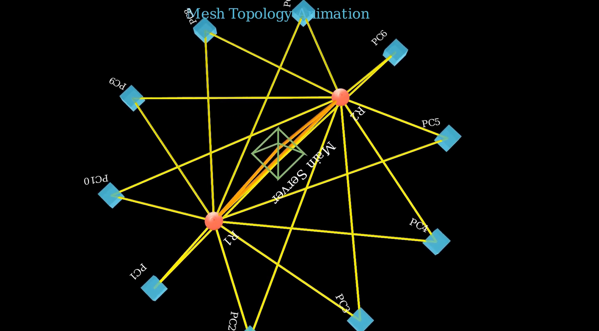
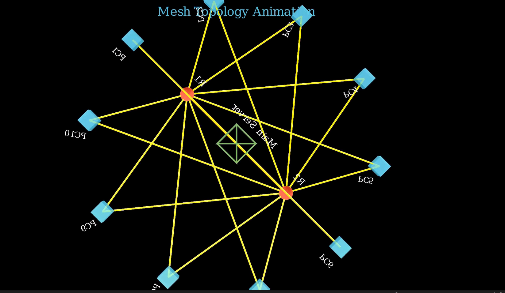
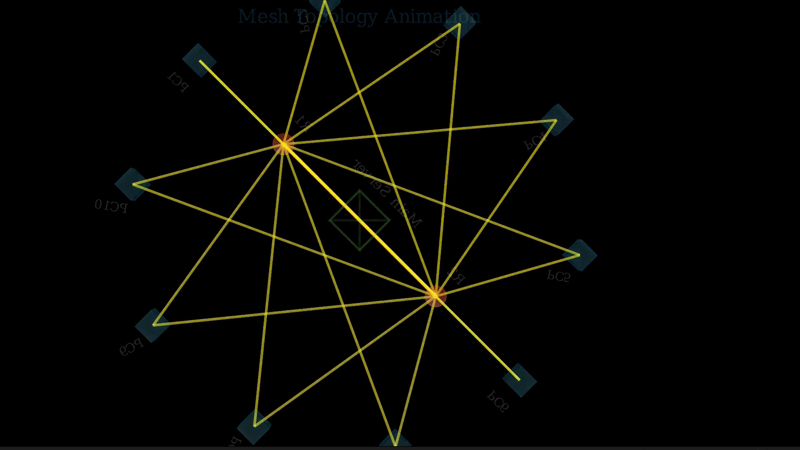

title: “Mesh Topology Animation” format: revealjs editor: visual —
Introduction
Mesh topology is a network structure where each device connects directly to multiple others, ensuring high redundancy and reliability. Unlike star or bus topologies, mesh allows continuous communication even if one link fails, making it ideal for critical applications. In modern industries—such as telecommunications, defense systems, and smart infrastructure—mesh topology enhances data integrity, fault tolerance, and scalability. It’s particularly relevant in wireless networks and IoT deployments, where decentralized control and resilient data pathways are essential. Though complex and costly to implement fully, partial mesh networks strike a balance between performance and efficiency, making them highly practical in today’s connected world.
Importing Required Libraries
from manim import *
import numpy as np
import randommanim: Core library for animations.numpy: For mathematical operations, especially trigonometry.random: To randomly select network nodes during animation.
Step 1: Create the 3D Pyramid (Server)
def create_pyramid(self):
height = 1
base_size = 0.8
v1 = np.array([-base_size/2, -base_size/2, 0])
v2 = np.array([base_size/2, -base_size/2, 0])
v3 = np.array([base_size/2, base_size/2, 0])
v4 = np.array([-base_size/2, base_size/2, 0])
apex = np.array([0, 0, height])
faces = VGroup(
Triangle().set_points_as_corners([apex, v1, v2]).set_color(GREEN),
Triangle().set_points_as_corners([apex, v2, v3]).set_color(GREEN),
Triangle().set_points_as_corners([apex, v3, v4]).set_color(GREEN),
Triangle().set_points_as_corners([apex, v4, v1]).set_color(GREEN),
Polygon(v1, v2, v3, v4).set_color(GREEN)
)
return faces- Creates a 3D pyramid to act as the main server.
- Uses triangles for the sides and a polygon for the base.
- All elements are colored green to visually distinguish the server.
Step 2: Scene Setup
self.set_camera_orientation(phi=75*DEGREES, theta=-45*DEGREES)Adjusts the initial camera angle for a better 3D perspective.
Add Title
title = Text("Mesh Topology Animation", font_size=24, color=BLUE).to_edge(UP*0.5)
self.add_fixed_in_frame_mobjects(title)- Adds a static title to the top of the screen.
- Does not rotate or move with the 3D scene. 
Step 3: Create PCs (End Devices)
radius = 4
pcs = VGroup()
pc_labels = VGroup()
for i in range(10):
angle = i * (2*PI/10)
x = radius * np.cos(angle)
y = radius * np.sin(angle)
z = np.sin(angle) * 0.5
pc = Cube(side_length=0.4).set_color(BLUE)
pc.move_to([x, y, z])
pcs.add(pc)
label = Text(f"PC{i+1}", font_size=16)
label.next_to(pc, DOWN)
label.rotate(angle, axis=OUT)
pc_labels.add(label)- Places 10 PC cubes evenly around a circle using trigonometry.
- Each PC is labeled and placed with a small Z-offset for 3D appearance.

Step 4: Create Routers
routers = VGroup()
router_labels = VGroup()
for i in range(2):
angle = i * (2*PI/2)
x = (radius*0.5) * np.cos(angle)
y = (radius*0.5) * np.sin(angle)
z = 1
router = Sphere(radius=0.2).set_color(RED)
router.move_to([x, y, z])
routers.add(router)
label = Text(f"R{i+1}", font_size=18)
label.next_to(router, UP)
router_labels.add(label)- 2 routers placed closer to the center, elevated for distinction.
- Red spheres represent routers.

Step 5: Create Server
server = self.create_pyramid()
server.set_color(GREEN)
server.move_to([0, 0, 2])
server_label = Text("Main Server", font_size=20).next_to(server, UP)- Server placed above routers at Z = 2.
- Reuses earlier
create_pyramid()function.

Step 6: Create Connections
def create_connections(start_objects, end_objects, bandwidth_type='high'):
...- Defines a reusable function for creating lines between elements.
- Supports 3 types of bandwidth:
- high (orange, thick)
- medium (yellow, medium)
- low (light blue, thin)
Apply Connections
pc_router_connections = create_connections(pcs, routers, 'medium')
router_router_connections = create_connections(routers, routers, 'high')
server_connections = create_connections(routers, [server], 'high')Connects: - PCs ↔︎ Routers - Routers ↔︎ Routers - Routers ↔︎ Server

Animate Creation
self.play(Create(pcs), Write(pc_labels), run_time=7)
for router, label in zip(routers, router_labels):
self.play(Create(router), Write(label), Flash(router.get_center(), color=GREY), run_time=3)
self.play(Create(server), Write(server_label), Flash(server.get_center(), color=GREEN), run_time=1.5)- Sequential creation of PCs, routers, and server.
- Flashes emphasize importance of nodes.
Animate Connections
self.play(Create(pc_router_connections), run_time=6)
self.wait(0.5)
self.play(Create(router_router_connections), run_time=3)
self.play(Create(server_connections), run_time=3)- Connections appear after nodes are placed.
- Wait time allows viewers to absorb each step.
Camera Movements
self.begin_ambient_camera_rotation(rate=0.1)
self.wait(3)
self.stop_ambient_camera_rotation()
self.move_camera(phi=45 * DEGREES, theta=45 * DEGREES, run_time=4)- Adds camera motion to increase immersion.
- Rotates around the mesh for full visualization.

Simulate Data Flow
for _ in range(2):
packet = Sphere(radius=0.1).set_color(WHITE)
start_pc = random.choice(pcs)
mid_router = random.choice(routers)
self.play(packet.animate.move_to(start_pc.get_center()), run_time=3)
self.play(packet.animate.move_to(mid_router.get_center()), run_time=3)
self.play(packet.animate.move_to(server.get_center()), run_time=3)
self.play(FadeOut(packet), run_time=1)- Simulates network packets traveling:
- From a random PC
- Through a random router
- To the main server
Final Camera Views
self.move_camera(phi=45 * DEGREES, theta=(360+45) * DEGREES, ...)
self.move_camera(phi=0 * DEGREES, ...)
self.move_camera(phi=180 * DEGREES, ...)- Rotates the camera to view from multiple angles.



Cleanup Scene
self.play(*[FadeOut(mob) for mob in self.mobjects], run_time=5, rate_func=rate_functions.smooth)- Smoothly fades out all objects to end the animation cleanly. 
Summary
Created a 3D network with: - PCs - Routers - Server - Connections - Data packets
Used Manim’s 3D capabilities and camera tools.
Highlighted modular design (reusable functions).